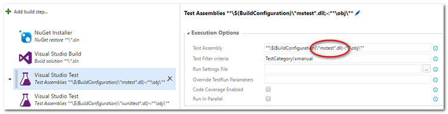
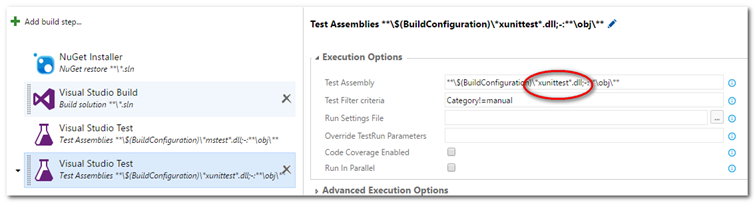

This is part of a series of walk throughs exploring CI in TFS, starting from the ground up. The entire series and source code are maintained at this BitBucket repository.
This is part of a series of walk throughs exploring CI in TFS, starting from the ground up. The entire series and source code are maintained at this BitBucket repository.
https://bitbucket.org/bladewolf55/tfs-ci-samples
Previous Part: TFS Continuous Integration Walk Through Part 4a - Problems With Traits
References
Test: Visual Studio Test
Part 2: Using Traits with different test frameworks
Part 3: Unit testing with Traits and filtering... <-Note that the documentation on mapping "Category" is wrong, see below!
Running selective unit tests in VS 2012 RC using TestCaseFilter
VSTS/TFS Visual Studio Test Task - Filter Criteria
Running unit tests with Test Explorer: Group and Filter
How to: Group and Run Automated Tests Using Test Categories
Run Tests using Visual Studio task
I initially couldn't get the category filtering to work. The documentation noted in the References said that an xUnit trait of "Category" would be automatically matched to the test explorer's "TestCategory".
{kind=link}
But, that's not true. xUnit (and presumably Nunit and others) passes its traits directly. See this exchange on the subject (Brad Wilson developed xUnit).
https://github.com/xunit/xunit/issues/1052
If you use this attribute in xUnit:
[Trait("Category", "manual")]and this filter:
TestCategory!=manual
the tests will fail. The MS test console will report an error, not run the test as expected. To find the error, you need to look in the build's logs.
{kind=link}
Here's the error message. It's the same message you'd get if you used the command line to run the tests (which is how I first discovered the error).
2017-02-02T18:55:03.9288278Z ##[error]Error: [xUnit.net 00:00:00.3802419]
CIConsoleSample.xUnitTests: Exception discovering tests: No tests matched the filter
because it contains one or more properties that are not valid (TestCategory). Specify
filter expression containing valid properties (Category, DisplayName, FullyQualifiedName)
and try again."Well, OK," I thought, "I'll just add 'Category' into the filter."
TestCategory!=manual | Category!=manual
Now I get two errors:
Error: No tests matched the filter because it contains one or more properties that
are not valid (Category). Specify filter expression containing valid properties
(TestCategory, Priority, FullyQualifiedName, Name) and try again.
Information: [xUnit.net 00:00:00.3791321] Discovering: CIConsoleSample.xUnitTests
Error: [xUnit.net 00:00:00.4843279] CIConsoleSample.xUnitTests: Exception discovering
tests: No tests matched the filter because it contains one or more properties that
are not valid (TestCategory). Specify filter expression containing valid properties
(Category, DisplayName, FullyQualifiedName) and try again.Maybe I need to use a Boolean AND in the filter.
TestCategory!=manual & Category!=manual
Nope, I get the exact same error message. After further testing and research, I learned that if there's a filter, at least one test in the assembly must satisfy the filter. In other words, if you filter on TestCategory, at least one test must include that trait, regardless of whether it's needed.
In my case, I'm using a single Visual Studio Test build step to run tests using two frameworks. When I was using [TestCategory("manual")] for MSTest, and [Trait("Category","manual")] for xUnit, and a filter of TestCategory!=manual | Category!=manual, here's what happened.
- The MSTest framework was called. The filter was evaluated and no tests with a trait of "Category" were found. So an error was reported.
- The xUnit framework was called. The filter was evaluated and no tests with a trait of "TestCategory" were found. So an error was reported.
The first time I ran the tests, I only had a filter TestCategory!=manual. The MSTests succeeded because there was, indeed, a trait with that name.
I did try some other filtering, hoping that filters might evaluate conditions in a "short-circuit" way, but always got the same errors. For example, I tried this:
(FullyQualifiedName~MSTest && TestCategory!=manual) || (FullyQuallifiedName~xUnit && Category!=manual)
This as a problem for reusing build definitions. It would be better if invalid traits were simply ignored, and the tests get run. This is a known problem, as Brad Wilson notes at the end of this thread.
https://github.com/xunit/xunit/issues/610
bradwilson commented on Oct 18, 2016 Unfortunately, this exception is generated by Visual Studio, not by us. We provide the list of traits to them, and they do the filtering; they're the ones generating this message. When you Google for the phrase "No tests matched the filter because it contains one or more properties that are not valid" you'll see hits for all testing frameworks, not just xUnit.net.>
The only workaround is to always include the trait on at least one test in the assembly. Note the trait doesn't need a used value.
[Fact]
[Trait("Category","blamo")]
public void SaveGreetingToCloud()So, that's not ideal, but it's up to Microsoft to take care of the problem.
Can we mitigate the issue at all? Sort of. We can at least have better management of our trait filters for different test frameworks.
First, let's grant that this is an unusual situation, using multiple test frameworks. The better way to manage this would probably be to have two test runs, one for MSTest and the other for xUnit. Add another build step to our definition, and then to change the Test Assembly fields to search for specifically. In other words, we'd have one build step for MSTest, and one for xUnit, and then we could name the traits as desired. This would rely on developers sticking to some naming conventions.
Warning
Be sure to evaluate your test results when you change settings and look for sane expectations. For example, when I first tried my xUnit build step, I added an extra "l" to .dll. The build didn't fail, it just didn't find any xUnit tests! I needed to look at the log and check that it had found the tests I expected.
MSTest step

{kind=link}
xUnit step

{kind=link}
Now, when running the automated build, there are two test runs, each with its own filter.
Next Part: TFS Continuous Integration Walk Through Part 5 - Multiple Solutions in Team Project